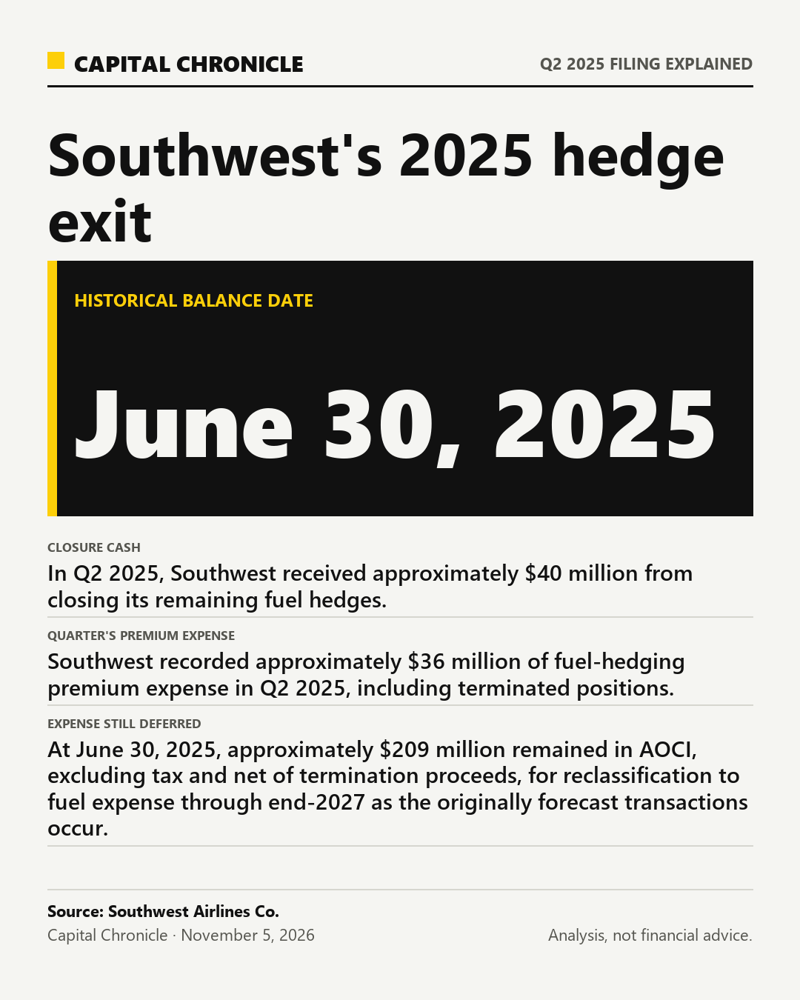

Southwest Airlines Co. closed its remaining fuel hedges in Q2 2025, yet the accounting did not finish with the contracts. Its July 24, 2025 Form 10-Q described premium expense still to enter fuel costs through 2027 as the originally forecast transactions occur. For a reader comparing fuel costs, the distinction matters: an expense tied to an old hedge does not, by itself, establish that a new hedge exists.
One closure, three clocks
In Q2 2025, Southwest received approximately $40 million from closing its remaining fuel hedges. The filing said those proceeds would reduce future premium costs.
Southwest recorded approximately $36 million of fuel-hedging premium expense in Q2 2025, including terminated positions. That amount moved from accumulated other comprehensive income (AOCI) into fuel and oil expense. In this disclosure, AOCI held premium costs awaiting recognition in the income statement.
At June 30, 2025, approximately $209 million remained in AOCI, excluding tax and net of termination proceeds, for reclassification to fuel expense through end-2027 as the originally forecast transactions occur.
Why expense outlasts the contracts
Southwest Airlines Co.'s filing tied later premium expense to the originally forecast transactions, even after closure removed the hedge assets. Capital Chronicle's analysis is that an accounting tail can outlive the portfolio.
The practical consequence is to read each amount against its own label and date. One describes money received, another describes expense recognized during a quarter, and the third describes a deferred balance. Adding them into a single exit cost would erase those distinctions.
The $209 million balance already incorporated the termination proceeds. Subtracting the $40 million again would count the same offset twice. The $36 million describes the quarter's premium expense, including terminated positions; the passage does not assign the entire amount to the act of closing the book.
What the filing cannot settle
Southwest Airlines Co.'s disclosure explains accounting timing; deferred expense is not a verdict on whether the hedge exit was economically sound. The passage does not measure the contracts' overall benefit or establish how the exit changed subsequent earnings.
To test the continuing accounting story in Southwest Airlines Co.'s filing, look for later company disclosures showing how the deferred balance moved and whether new contracts were added. This filing alone cannot establish the current hedge policy.
That leaves a useful reading rule: identify when the contracts ended, when cash changed hands and when an expense reached earnings before interpreting a hedge-related fuel-cost number. Southwest's 2025 disclosure answers the timing question without settling every question about the decision's economics.
Analysis, not financial advice. Readers decide whether to trade.

Analysis, not financial advice.